CS140 Midterm Exam - October 11, 2005 - Answers
Jim Plank
Question 1
The variable p holds the address of array element a[2].
The first printf() statement says that this is 0xbffff024. Therefore,
a starts at 0xbffff024-8 = 0xbffff01c. p is at address
0xbffff044. Therefore, this is what memory looks like just after that
printf() statement:
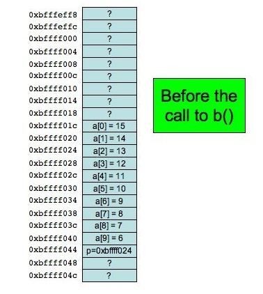
Now, b() is called with two parameters: p, which is
0xbffff024, and &p which is 0xbffff044. Therefore,
ip = 0xbffff024 and ipp = 0xbffff044. The first
printf() statement in b() prints the address of ip,
which is 0xbffffeff8. Therefore, this is what we know about memory
when b() starts. Note, I don't put ipp in a memory slot
because we don't know its address:
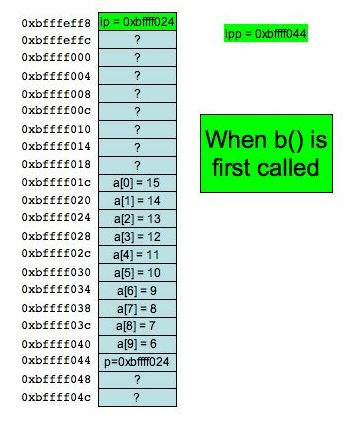
The first printf statement will print 0xbffff024 and 0xbffff044.
Next, we execute *ipp += 2, which means that the value in
address 0xbffff044 will have eight added to it. This means that
p in main() has its value changed to 0xbffff02c.
Here is the change:
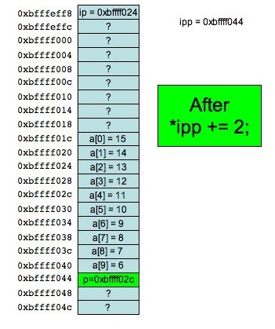
The next statement is **ipp = 1. Since *ipp is
0xbffff02c, this changes array element a[4] to be 1:
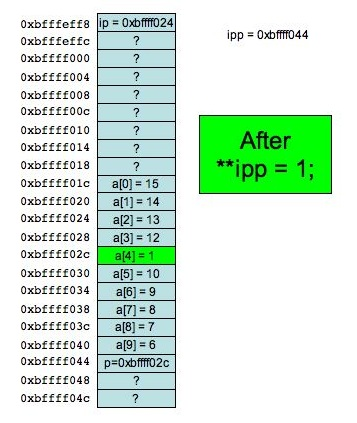
Now we perform *ip = 17. Since ip is 0xbffff024, this sets
array element a[2] to be 17:
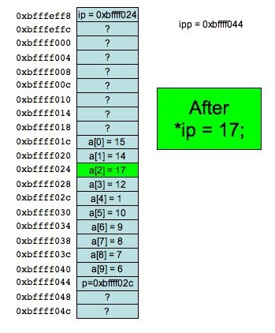
Now, we return, and the p++ statement adds four to p:
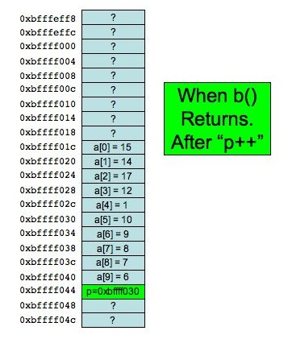
Finally, we set *p to be three. Since p is 0xbffff030, this
sets array element a[5] to be three:
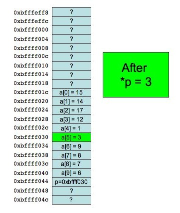
Therefore, the final printouts will be:
0xbffff01c
0xbffff044
0xbffff030
15 14 17 12 1 3 9 8 7 6
So -- the output to this program is:
0xbffff024 0xbffff044
0xbfffeff8
0xbffff024 0xbffff044.
0xbffff01c
0xbffff044
0xbffff030
15 14 17 12 1 3 9 8 7 6 | |
Grading - 9 points
- One point for 0xbffff024 on line three
- One point for 0xbffff044 on line three
- One point for 0xbffff01c on line four
- One point for 0xbffff044 on line five
- One point for 0xbffff030 on line six
- One point for line 7 having at least 6 descending numbers
- One point for 17 in the third position on line 7
- One point for 1 in the fifth position on line 7
- One point for 3 in the sixth position on line 7
Question 2
The correct answers are D, E and F. Here are pictures of each
implementation, starting just after the newn->val call.
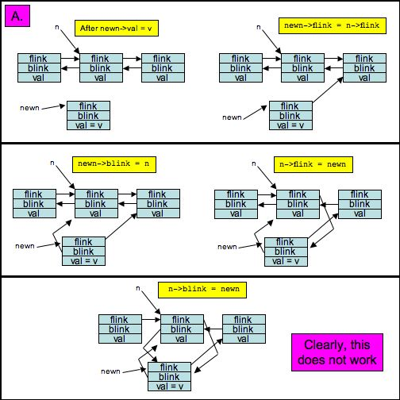
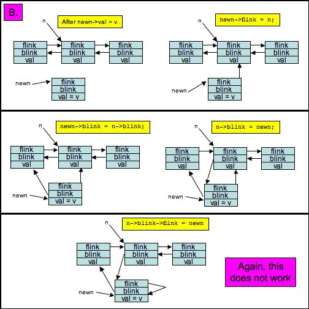
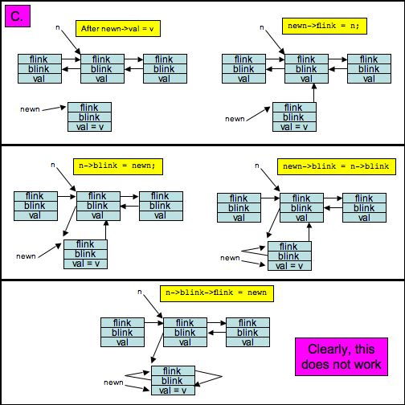
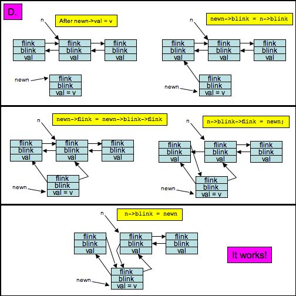
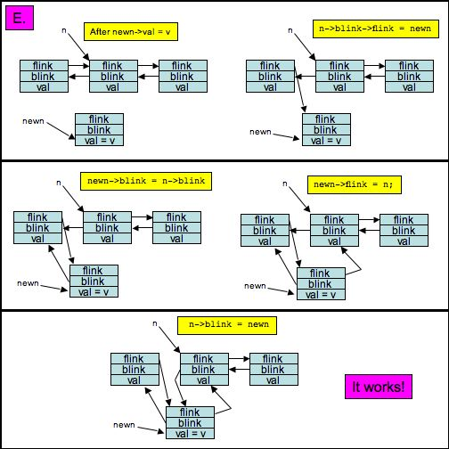
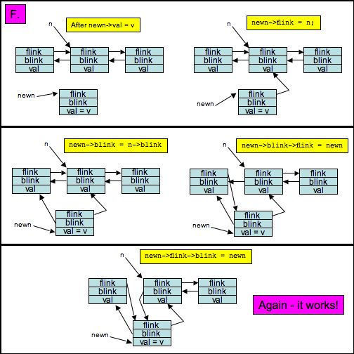
Grading - 9 points
- 1.5 points for not saying A works.
- 1.5 points for not saying B works.
- 1.5 points for not saying C works.
- 1.5 points for saying D works.
- 1.5 points for saying E works.
- 1.5 points for saying F works.
Question 3
When i is even, the first word on the line gets appended to
a list. When i is odd, the last word on the line gets prepended
to the list. So, the building of the list is:
| i |
Action |
d |
0
1
2
3
4
5
6
7
|
Append
Prepend
Append
Prepend
Append
Prepend
Append
Prepend
|
"A"
"top", "A"
"top", "A", "Is"
"flame", "top", "A", "Is"
"flame", "top", "A", "Is", "The"
"love", "flame", "top", "A", "Is", "The"
"love", "flame", "top", "A", "Is", "The", "And"
"name", "love", "flame", "top", "A", "Is", "The", "And"
|
The output is:
name
love
flame
top
A
Is
The
And |
Grading - 6 points
- 1.5 points for having "name", "love", "flame", "top"
- 1.5 points for having "A", "Is", "The", "And"
- 1.5 points for having the correct output, or having it reversed.
- 1.5 points for having the correct output.
Question 4
When i is even, the first word on the line is enqueued onto a queue.
When i is odd, the first word on the line is pushed onto a stack.
Then the queue is printed out, and the stack is printed out. The output:
A
Is
The
And
is
beauty
silver
the |
Grading - 6 points
- 1.5 points for having "A", "Is", "The", "And"
- 1.5 points for having "is", "beauty", "silver", "the"
- 1.5 points for having the correct output, or having it reversed.
- 1.5 points for having the correct output.
Question 5
For each line, x points to the first occurrence of the character 'o'.
If there is no 'o', then it points to the first character on the line.
Variable y points to the first occurrence of the character 's'.
If there is no 's', then it points to the first character on the line.
The program then prints the difference between y and x.
Although these are pointers, that's ok -- chars are one byte each, so this
will print out the number of characters between the pointers.
| Line number |
x |
y |
y - x |
| 1 |
&(is->text1[3]) |
&(is->text1[7]) |
4 |
| 2 |
&(is->text1[5]) |
&(is->text1[0]) |
-5 |
| 3 |
&(is->text1[0]) |
&(is->text1[1]) |
1 |
| 4 |
&(is->text1[0]) |
&(is->text1[0]) |
0 |
| 5 |
&(is->text1[11]) |
&(is->text1[4]) |
-7 |
| 6 |
&(is->text1[12]) |
&(is->text1[0]) |
-12 |
| 7 |
&(is->text1[0]) |
&(is->text1[8]) |
8 |
| 8 |
&(is->text1[0]) |
&(is->text1[1]) |
1 |
The output is therefore
Grading - 6 points
- Line 1: .75 for "4", .5 for "-4", .25 for "3", .25 for "7"
- Line 2: .75 for "-5", .5 for "5", .25 for "0"
- Line 3: .75 for "1", .5 for "-1", .25 for "0"
- Line 4: .75 for "0"
- Line 5: .75 for "-7", .5 for "7", .25 for "4", .25 for "11"
- Line 6: .75 for "-12", .5 for "12", .25 for "0"
- Line 7: .75 for "8", .5 for "-8", .25 for "0"
- Line 8: .75 for "1", .5 for "-1", .25 for "0"